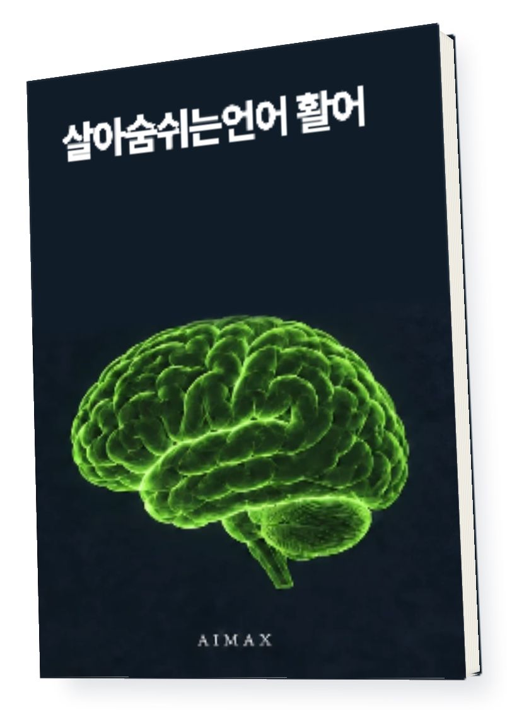
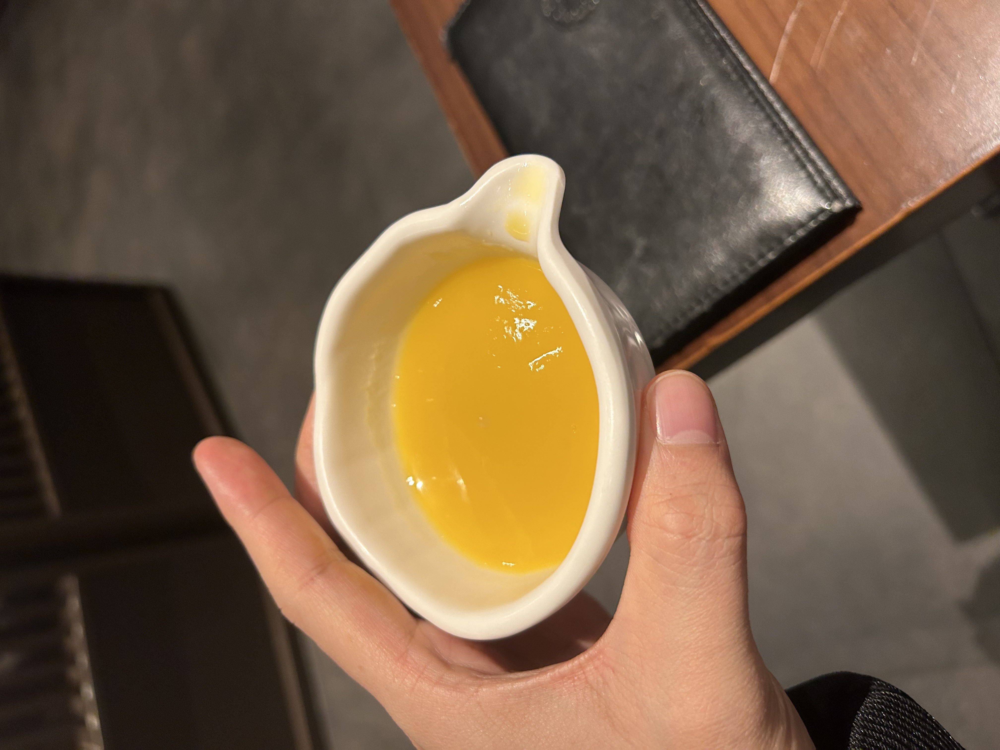
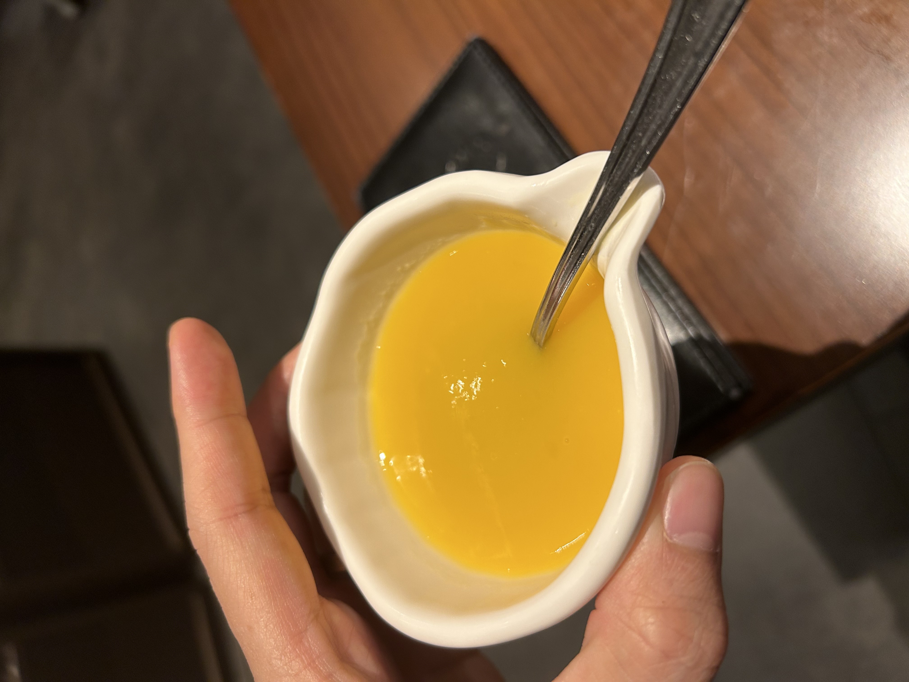

실패로 배우는100가지 마인드셋

실패로 배우는 100가지 마인드셋
이 책이 필요한 순간
방법을 배워도
막상 움직이기 어렵다면
같은 일을 해도 무엇을 보고 어떻게 판단하느냐에 따라 다음 행동이 달라집니다. 활어는 저자가 동료들에게 전하던 생각과 사업을 이어오며 쌓은 경험을 담은 글입니다.
책 속에서 먼저 확인하세요
익숙한 물건도
다른 쓰임으로 바라봅니다
원문은 일상에서 관찰한 물건과 장면을 사업의 생각으로 연결합니다. 아래 컵 사진도 그 안에 수록된 실제 예시입니다.


제공된 원문에서 가져온 본문 자료입니다.
이 책에서 다루는 것
실패로 배우는 100가지 마인드셋
소통하는 방식
무엇을 왜 하는지 설명하고 함께 이해하는 태도를 다룹니다.
생각하는 방식
주어진 상황을 해석하고 스스로 선택하는 관점을 살핍니다.
사람과 제품
고객의 반응과 일상 속 제품을 관찰하며 질문을 넓힙니다.
집중과 실행
배운 내용을 내 일에 적용하고 행동으로 옮기는 경험을 읽습니다.
내 일에 적용하기
읽은 문장을
오늘 할 일로 바꿔보세요
내 상황
요즘 막히는 일 하나를 구체적으로 적습니다.
질문
왜 하는지, 누구에게 필요한지 묻습니다.
행동
직접 확인할 수 있는 작은 일을 정합니다.
지금 나는 [상황]에서 [고민]을 겪고 있습니다. 첨부한 활어의 내용 중 참고할 관점을 찾아주세요. 내 상황에 맞춰 생각해볼 질문과 오늘 직접 해볼 행동을 구분해 제안해주세요.
활용 예시입니다. AI의 답은 원문과 내 상황에 맞는지 확인하세요.읽고 보관하고 다시 꺼내 쓰세요
전자책과 지식 파일을
함께 받습니다
편하게 읽는 전자책
컴퓨터와 모바일에서
본문을 읽는 파일입니다.
내 자료로 쓰는 지식 파일
압축을 풀어 Obsidian에서 열거나
AI에 참고 자료로 넣어보세요.
지식 파일은 Obsidian/AI용 자료입니다.
AI가 자동 실행되거나 내용을 영구 학습하는 프로그램은 아닙니다.
결제 후 이렇게 받으세요
구매 이메일로 온 메일에서
자료 받기를 누르세요.
로그인 없이 14일 동안,
파일당 3회 다운로드할 수 있습니다.
다시 받을 때는 같은 구매 이메일로
라운지에서 재다운로드하세요.
이런 분께 권합니다
- 사업을 시작하며 자신만의 판단 기준을 찾는 분
- 여러 방법을 배우지만 실행이 자꾸 미뤄지는 분
종이책이 배송되나요?
종이책 배송 없이 PDF와 지식 파일 ZIP을 받는 디지털 상품입니다.
AI나 Obsidian을 꼭 써야 하나요?
PDF만 읽어도 됩니다. 지식 파일은 책을 보관하거나 AI에 참고 자료로 넣고 싶을 때 활용하세요.
구매하면 같은 성과를 얻나요?
이 책은 원문의 방법과 경험을 담은 자료입니다. 적용 방식과 사업 상황에 따라 결과는 달라집니다.
다음 선택에 참고할 한 권
살아숨쉬는언어 활어
실패로 배우는 100가지 마인드셋
구매 이메일을 정확히 입력해주세요.